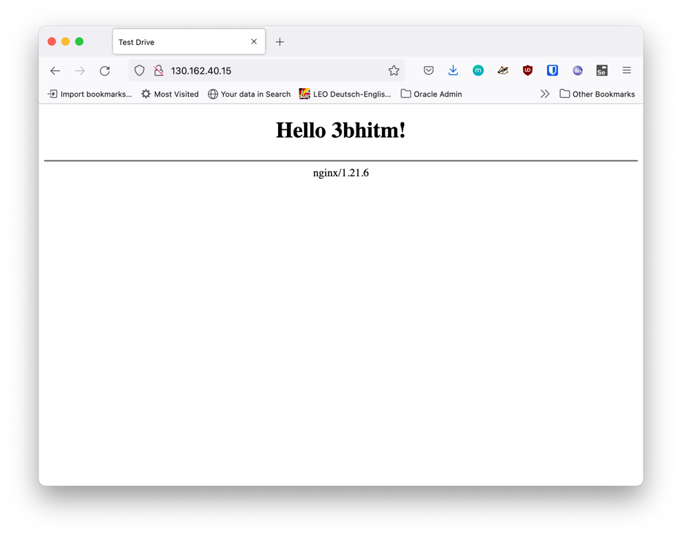

1. 2021-09-28 (Dienstag)
Prof. Aberger anwesend
-
Linux shell commands
32 echo $PATH
33 ll
34 echo Hello World
35 echo $USER
36 set
37 env
38 set | more
39 env | grep BASH
40 env | grep HOSTNAME
41 env
42 set | grep BASH
43 set | grep HELLO
44 set | grep SURFACE
45 SURFACE=TOMTAILOR
46 set | grep SURFACE
47 ll
48 where java
49 which java
50 ls -l /usr/bin
51 ls -l /etc/alternatives
52 ls -l /etc/alternatives/java
53 sudo update-alternatives --config java
54 sudo apt install openjdk-11-jdk
55 sudo update-alternatives --config java
56 java -version
57 sudo update-alternatives --config java
58 java -version
59 which java
60 docker version2. 2021-10-05 (Donnerstag)
(1 EH entfallen)
-
Datenmodellierung: Bsp: Motel
3. 2021-10-05 (Dienstag)
Prof. Aberger anwesend
3.2. Docker Einführung
68 docker version
69 sudo docker version
70 sudo docker run hello-world
71 sudo groupadd docker
72 sudo usermod -aG docker $USER
73 docker run hello-world
76 newgrp docker
77 docker run hello-world
78 docker run docker/whalesay Hallo 3BHITM8. 2021-11-09 (Prof. Aberger)
8.1. Build-Tools: maven
Source: .java → .class → .jar (gezipt)
java -jar MyClass
8.1.1. Was ist ein tar-Archiv
-
Was ist ein .tar.gz
-
tape archive (kommt von den Bandlaufwerken)
-
ist nicht komprimiert (nur Verzeichnisstruktur)
-
mit gzip wird komprimiert
-
tar -xzf xxx.tar.gz
8.1.2. WSL2
-
öffnen des Explorers
-
in Leiste
//wsl$eingeben
oder
-
Windows-Terminal downloaden vom Microsoft Store
-
installieren
-
öffnen
-
dann einfach explorer eingeben
8.1.3. Installation von maven
-
downloaden https://maven.apache.org/download.cgi (entweder .tar.gz oder .zip)
-
in opt-Verzeichnis kopieren
sudo mv /<username>/Download/apache-maven-3.8.3-bin.tar.gz /opt
sudo tar -xzf apache-maven-3.8.3-bin.tar.gz
mavenmv apache-maven-3.8.3 maven
cat maven-env.sh ./maven-env.sh echo $MAVEN_HOME source ./maven-env.sh echo $MAVEN_HOME cd /opt echo $MAVEN_HOME . ./maven-env.sh echo $MAVEN_HOME cd /opt . maven-env.sh . ./maven-env.sh echo $MAVEN_HOME env echo $MAVEN_HOME . ./maven-env.sh echo $PATH nano maven-env.sh . ./maven-env.sh echo $PATH mvn -version
#aufrufen mit: source maven-env.sh export MAVEN_HOME=/opt/maven export PATH=$MAVEN_HOME/bin:$PATH
9. 2021-11-11
9.2. Projektthemen
| Projekt | Team |
|---|---|
Diagramm-Generator |
Eder Moritz, Al Sabagh A., Angerer Mona |
Uno-Kartenspiel |
Spindler Thomas, Reiter Lydia, Just Elias, Thaller David, Lautischer |
Kino Reservierung |
Schatzberger Oliver, Klose Peter, Lummerstorfer Lukas, Hager Sebastian |
Versteigerungs-programm |
Jaklitsch Julian, Scharrer Raphael, Goldmann Pascal, Mihaescu Teofan |
Fragebogen-Programm |
Weinhäupl, (Knoll), (Horner), (Brunner) |
10. 2021-11-16 Maven Fortsetzung
10.1. Multimodule
-
Die Packages im Java-Code werden beim compilieren in einer Verzeichnisstruktur abgebildet
10.2. Semantische Versionierung
-
z.B. 5.3.2
-
5 → Major-Version
-
3 → Minor-Version
-
2 → Patch
-
Auf Grundlage einer Versionsnummer von MAJOR.MINOR.PATCH werden die einzelnen Elemente folgendermaßen erhöht:
-
MAJOR wird erhöht, wenn API-inkompatible Änderungen veröffentlicht werden,
-
MINOR wird erhöht, wenn neue Funktionalitäten, welche kompatibel zur bisherigen API sind, veröffentlicht werden, und
-
PATCH wird erhöht, wenn die Änderungen ausschließlich API-kompatible Bugfixes umfassen.
Außerdem sind Bezeichner für Vorveröffentlichungen und Build-Metadaten als Erweiterungen zum MAJOR.MINOR.PATCH Format verfügbar.
14. Notationen
| Notation | Beispiel |
|---|---|
PascalCase |
NetworkController |
CamelCase |
networkController |
SnakeCase |
network_controller |
KebabCase |
network-controller |
17. 2021-12-16
17.1. Was ist Asciidoctor?
17.1.1. Problemstellung
-
Dokumentationen für Software Projekte werden oft in binären Formaten wie MS-Word, LibreOffice usw erstellt.
-
Problem dabei ist, dass die Versionierung solcher Dokumente nur eingeschränkt möglich ist.
-
Besser wäre:
-
wenn sämtliche Dokumentation als Text vorliegt
-
auch sollte die Dokumentation von Softwaresystemen direkt aus dem Code generiert werden
-
17.1.2. Lösung
-
Verwendet man solche Auszeichnungssprachen wie Markdown, plantuml und Asciidoctor / Asciidoc so spricht man von "doc-as-code"
-
Die Dokumentation wird nicht mit eigenen Werkzeugen (Textverarbeitung, Zeichenprogramm usw. erstellt), sondern in der IDE, in der auch die Programme erstellt werden
-
17.1.3. Umsetzung
Markdown
-
Für markdown gibt es eigene Tools z.B. MacDown für MacOS, Notion als Browser-Plugin, bzw Plugins für sämtliche IDEs z.B. VSC, intellij, usw
-
markdown wird in github und in wikis wie z.B. der wikipedia verwendet
-
Nachteile:
-
beschränkte Möglichkeiten → daher ist es schwieriger umfangreiche Dokumente zu erstellen
-
-
Vorteile:
-
beschränkte Möglichkeiten → daher nicht so schwer zu lernen
-
18. 2021-12-21
18.1. Übung: Branching, Merging
368 pwd 369 cd 370 ls .ssh 371 ls -l 372 ls -l .ssh 373 gedit .ssh/id_rsa.pub 374 cd 3bhitm-labs-eder/ 375 git status 376 cd .. 377 rm -rf 3bhitm-labs-eder/ 378 ll 379 mkdir work 380 cd work/ 381 git clone git@github.com:EderMoritz/3bhitm-labs-eder.git 382 cd 3bhitm-labs-eder/ 383 ld 384 ls 385 gedit README.md 386 git status 387 git add README.md 388 git status 389 git commit -m "test merge" 390 git status 391 git push 392 git pull 393 git config pull.rebase false 394 gedit README.md 395 git add . 396 git commit -m "update README" 397 git push
775 cd 3bhitm-labs-eder/ 776 gedit README.md 777 git pull 778 gedit README.md 779 git add . 780 git commit -m "change read.me" 781 git push 782 cd .. 783 rm 3bhitm-labs-eder/ 784 ll 785 git clone git@github.com:EderMoritz/3bhitm-labs-eder.git 786 cd 3bhitm-labs-eder/ 787 ll 788 nano README.md 789 git add . 790 git commit -m "changed README.md" 791 git push 792 history 793 git add . 795 git commit -m "updated by Lydia" 796 git push
18.3. GIT (Mitschrift Thomas Spindler)
neuen Ordner erstellen und erneut Klonen
mkdir work cd work git clone <LINK>
File im Directory abändern:
gedit readme.md <ändern des files> git commit -m "test merge" git push
Andere Person nun auf dem repo:
git status
man bemerkt, dass das Repo nicht auf dem aktuellen Stand ist
updaten des Repos:
git pull
mit diesen Command laded man alle Abänderungen in den Dateien des remote repos herunter.
Person 2 editiert dann die Datei, commited und pusht
echo "Person 2 edit" >> readme.md git commit -m "update readme.md - Person 2" git push
Person 1 ladet nun wieder die Abänderungen herunter
git pull
nun ändern beide Personen die Datei readme.md ab.
beide Personen:
git add git commit -m "merge test2" git push
bei einer Person wird der push rejected, da das Remote
repo Änderungen beinhaltet, die noch nicht existieren.
Daher braucht man git stash:
git stash
aufgrund des Commites kann stash nicht ausgeführt werden.
| vor dem commit IMMER einen pull machen |
Öffnen des Repos in IntelliJ für einen Merge. Mergekonflikte sind auf der Kommandozeile eher schwer zu machen, daher sollten wir dafür einen Editor verwenden (IntelliJ, VSCode)
18.4. Git stash (Mitschrift Thomas Spindler)
2 Leute klonen ein Git Repository und ändern in einem beliebigen File eine bestimmte Zeile ab.
Wir haben bereits gelernt, dass man die Abänderungen mergen kann, allerdings werden wir uns in dieser Übung stash verwenden.
Eine der Personen push dann die Abänderungen auf das aktuelle Repository:
git commit -m "<MESSAGE>" git push
Hiermit haben wir einen Konflikt erstellt.
Die andere Person "versteckt" nun ihre Abänderungen, mithilfe von git stash, und pullt dann die Abänderungen vom remote Repo.
git stash git pull
Danach holen wir die Abänderungen wieder zurück:
git stash pop
Dann können wir ohne weitere Probleme commiten und pushen.
| Git pulls sollten regelmäßig und oft gemacht werden, um größere Konflikt zu verhindern. Dies kann auch in IntelliJ unter den folgenden Optionen automatisiert werden: |

18.6. Git branches (Mitschrift Thomas Spindler)
Die folgenden Übungen wurden in 06-git-lab-school mit 2er Gruppen durchgeführt.
Die Grundlage für diese Übung ist ein Java Programm (Maven) mit folgender Struktur:
Für die Implementierung des Programmes werden zwei Git-Branches angelegt:
feature/teacher feature/student
Jedes Teammitglied geht nun in einen Branch, und implementiert dort das passende Feature passend zum Branchname aus. Dies geht mithilfe folgendem Commandos:
git checkout feature/..
Nach dem Implementieren wird alles auf das remote Repository gepusht.
Daraufhin wechselt der 1. Schüler in den main branch und merged das Feature in diesen.
git checkout main git merge feature/teacher gut push
Dies wird nun für den Studenten wiederholt.
Danach werden beide Branches gelöscht:
git branch -d feature/teacher git branch -d feature/student
Die remote Branches können ganz einfach im Webinterface von Github gelöscht werden.
| Branches beziehen sich immer auf Features, und nicht Personen! |
19. PlantUML (Mitschrift Thomas Spindler)
PlantUML Diagramme sind, wenn man das Template verwendet, im plantuml Ordner.
19.1. Umgebungen
19.1.1. PlantUML in Asciidoc
Da wir unsere Mitschriften in Asciidoc führen, zeigen wir dies gleich am Anfang.
Einbindung von PlantUML in Asciidoc:
[plantuml, <NAME>] ---- @startuml ... @enduml ----
Hierbei gilt zu beachten, dass der <NAME> immer unterschiedlich sein muss. Wenn ein name doppelt verwendet wird, wird nur eines der zwei Diagramme an beiden Stellen angezeigt.
Um ein externes File einzufügen, kann folgende Syntax verwendet werden:
[plantuml, <NAME>] ---- include::plantuml/plantuml-example-1.puml[] ----
19.2. Grundlagen
jedes PlantUML file hat ein Start und ein Ende:
@startuml start ... stop @enduml
Nachschlagwerk: PlantUML Dokumentation
19.2.1. Sequenzen
Eine Sequenz ist ein Teil unseres Programmes. Mithilfe von PlantUML können wird diese schnell und genau darstellen.
Beispiel für eine Sequenz in PlantUML:
@startuml :Hello World; @enduml
wird zu:
Ebenfalls kann man einer Sequenz einen Titel und eine Beschreibung geben. Hierbei ist darauf zu achten, dass im Titel keine Leerzeichen vorhanden sein dürfen.
@startuml HelloWorld:This is a description @enduml
19.2.2. If-Statements
If Statements in PlantUML darstellen:
@startuml if(Paket-Gewicht) is (>10kg) then :Sende mit LKW; else :Sende mit PKW; endif @enduml
19.2.3. Start und Stop
Wie bereits im Beispiel oben eingebaut, hat ein Programmablauf immer einen Anfang und ein Ende. Diese können mit den Keyworten "start" und "stop" dargestellt werden.
@startuml start :HelloWorld stop @enduml
19.2.4. Kommentare
Kommentare in PlantUML:
@startuml 'This is a comment :HelloWorld; @enduml
Wie man an folgendem Beispiel sieht, wird dieser nicht angezeigt:
19.2.5. Klassen
Um Klassendiagramme in Plantuml darzustellen, sollte man Klasse dafür verwenden. Diese können mit folgender Syntax ausgedrückt werden:
@startuml
class example {
+publicText: String
#protectedText: String
-privateText: String
}
@enduml
Die Sichtbarkeit kann man Mithilfe folgender Kürzel festgelegt werden:
| Character | Visibility |
|---|---|
+ |
public |
- |
private |
# |
protected |
~ |
package private |
Methoden können in Klassendiagrammen ebenfalls dargestellt werden:
@startuml
class example {
+publicText: String
#protectedText: String
-privateText: String
+method1()
-method2()
}
@enduml
Statische und abstrakte Element einer Klasse können ebenfalls dargestellt werden:
@startuml
class Dummy {
{static} String id
{abstract} void methods()
}
@enduml
Die Linien zwischen Methoden und Variablen kann man auch selbst setzten.
Siehe PlantUMLDoc
19.2.6. Notizen
Notizen in Plantuml sind wichtig, wenn man Teile des Diagrams kommentieren möchte, dies allerdings im finalen Diagramm enthalten sein sollte.
@startuml note "Das ist ein Kommentar" as CMT1(1) @enduml
| 1 | Mithilfe des Wortes as kann man dieser Notiz einen Namen geben. |
Dies sieht dann wie folgt aus:
Kommentare können aber zu Elementen hinzugefügt werden, da diese sonst einfach nur am Anfang der Zeichnung stehen.
@startuml class Player note "Das ist ein Kommentar" as CMT1 CMT1 .right. Player (1) @enduml
| 1 | Mit dem right geben wir an, dass der Kommentar rechts mit der Klasse Player verbunden ist. |
19.3. Klassendiagramme
Nun können wir das gelernte Wissen anwenden und ein Klassendiagramm gestalten.
Dazu legen wir zu als Erstes alle Klassen an, die wir benötigen:
@startuml
class Match
class Player {
-player1: Player
-player2: Player
-score1: int
-score2: int
-court: Court
}
class Booking
class Court
@enduml
Dies sieht dann wie folgt aus:
Nun fügen wir die Pfeile (Assoziationen) zwischen den Klassen dazu:
@startuml
left to right direction (1)
class Match
class Booking
class Player {
-player1: Player
-player2: Player
-score1: int
-score2: int
-court: Court
}
Player "*" -- "*" Court
(Player, Court) .. Booking
Match "*" --> "1" Player : Player1 >
Match "*" --> "1" Player : Player2 >
Match --> Court
@enduml
| 1 | Angabe, dass das Diagramm von links nach rechts gezeichnet werden sollte. |
19.4. Beispiel aus dem Unterricht
Mithilfe diesen Beispieles wurde uns PlantUML erklärt:
Mithilfe dieses Beispiels wurde uns PlantUML erklärt.
19.5. Usecase - Diagramm
Usecases können Beschreiben, wofür man ein Objekt verwenden kann.
Beispiel für usecases eines PKWs:
@startuml usecase "transport goods" usecase "transport persons" @enduml
19.5.1. Actors:
Um Personen auf Diagrammen darzustellen, kann man Actors verwenden
@startuml actor "driver" @enduml

21. Arten von Mengen (Mitschrift Lydia Reiter & Thomas Spindler)
Siehe auch: UML Usecase - Diagramm
22. V-Modell (Mitschrift Lydia Reiter & Thomas Spindler)
Das V-Modell zeigt den Vorgang von Softwareentwicklung:
23. Vererbung (Mitschrift Lydia Reiter & Thomas Spindler)
Tafelbild aus dem Unterricht:
B vererbt von A
Dies kann man auch in PlantUML darstellen:
B besitz daraufhin beide Eigenschaften:
(keine korrekte Darstellung der Klasse, nur symbolisch!)
26. Anwendungsfalldiagramm (Mitschrift Moritz Eder)
Der Anwendungsfall ist die Schnittstelle zum Kunden und der Grund warum man die Software kauft.
Anwendungsfälle beim Auto:
-
Transport von Personen
-
Transport von Gütern
-
aus prestige Gründen (Angeberei)
| Scheibenwischer sind nicht funktional |
-
wichtige Seiten im kapitel_3_2_Anwendungsfalldiag.pdf
| 2, 3, 4, 7, 8, 13, 17, 19, 20, 22 |
27. Zustandsmaschinen (Mitschrift Moritz Eder)
Ein Thermostat ist ein gutes Beispiel für eine Zustandsmaschine. (siehe Seite 6)
Zustände Flugzeugbetrieb:
-
flugbereit
-
in Wartung
-
ausgeschieden
Zustände Rechnung:
-
offen
-
bezahlt
-
Mahnung1,
-
Mahnung2
-
…
-
uneinbringlich
-
wichtige Seiten im kapitel_3_3_Zustandsmaschinen.pdf
| 6, 7, 17, 27, 28, 45, 51 |
28. 2022-02-15 (Di.)
-
Mitarbeit von Peter Klose
28.3. Docker installieren
28.3.1. Linux
sudo apt-get update
sudo apt-get install \
ca-certificates \
curl \
gnupg \
lsb-release
curl -fsSL https://download.docker.com/linux/ubuntu/gpg | sudo gpg --dearmor -o /usr/share/keyrings/docker-archive-keyring.gpg
echo \
"deb [arch=$(dpkg --print-architecture) signed-by=/usr/share/keyrings/docker-archive-keyring.gpg] https://download.docker.com/linux/ubuntu \
$(lsb_release -cs) stable" | sudo tee /etc/apt/sources.list.d/docker.list > /dev/null
sudo apt-get update
sudo apt-get install docker-ce docker-ce-cli containerd.io28.4. Docker testen
Versuchen Sie:
docker run --rm docker/whalesay cowsay hello 3bhitmAusgabe:
______________
< hello 3bhitm >
--------------
\
\
\
## .
## ## ## ==
## ## ## ## ===
/""""""""""""""""___/ ===
~~~ {~~ ~~~~ ~~~ ~~~~ ~~ ~ / ===- ~~~
\______ o __/
\ \ __/
\____\______/Funktioniert nicht?
Versuche dies
newgrp docker
sudo groupadd docker
sudo usermod -aG docker $USERDocker starten:
sudo systemctl start dockerDocker Status:
sudo systemctl status docker28.5. Eigenen Docker Container
Terminal:
mkdir docker
cd docker (1)
nano Dockerfile (2)| 1 | neuen Ordner erstellen und hineinwechseln |
| 2 | neues File erstellen (image File) muss den Namen Dockerfile haben |
Dockerfile:
FROM ubuntu
RUN echo hello 3bhitm > test.txtTerminal:
docker build -t my-ubuntu . (1)
docker run -it my-ubuntu /bin/bash (2)| 1 | Buildet einen Container mit dem Namen my-ubuntu im aktuellen Verzeichnis (.) |
| 2 | Startet den Container my-ubuntu mit einem interaktiven Terminal (-it) im Verzeichnis /bin/bash |
30. 2022-03-01 (Di.)
30.1. Im Container nicht
FROM ...
CMD ["tail", "-f", "/dev/null"]-
Dieses Kommando verhindert, dass der Docker Container beendet wird.
30.2. Nachvollziehbarkeit
-
Beim Starten des Containers soll alles sauber definiert sein.
-
Daher ist es wichtig die Version beim zugrunde liegenden Image anzugeben.
| Immer bei FROM-Klausel eine Versionsnummer angeben (vergleiche semantische Versionierung) |
z.B. FROM ubuntu:20.04 oder FROM ubuntu:focal
-
Würde man
latestverwenden, kann sich die verwendete Version ändern-
das Image kann "brechen", dh es funktioniert nicht mehr
-
31. 2022-03-03 Do.
31.1. docker Installation auf oravm kontrollieren und vervollständigen
31.1.2. Ist der ubuntu-User in der docker-group
cat /etc/groups
root:x:0: daemon:x:1: bin:x:2: sys:x:3: adm:x:4:ubuntu tty:x:5: ... opc:x:1000: ubuntu:x:1001: <-- docker:x:998:
Mit cat /etc/passwd kann man sich alle user ansehen.
|
31.2. nginx mittels docker installieren
31.2.1. Vorbereiten des opt-Verzeichnisses
-
Wir wollen die docker Container in /opt starten
ll / sudo chown -R ubuntu:ubuntu /opt ll / cd /opt mkdir docker cd docker mkdir nginx cd nginx
31.2.2. Erstellen eines Scripts zum Builden und Starten eines gedockerten nginx
sudo apt install nano
nano start-nginx.sh
docker run --name my-nginx \ (1)
--rm \ (2)
-v ${PWD}/html:/usr/share/nginx/html \ (3)
-p 80:80 \ (4)
-d \ (5)
nginx:1.21.6 (6)
| 1 | Der Container erhält den Namen my-nginx |
| 2 | rm … remove → nach dem Stoppen des Containers wird dieser gelöscht |
| 3 | bind mount → im momentanen Verzeichnis ${PWD} (print working directory) wird der html-Ordner aus dem Container gespiegelt. |
| 4 | p … publish → der Port 80 des guests wird auf den Port 80 des hosts zugewiesen |
| 5 | d … daemon → der Docker Container läuft im Hintergrund |
| 6 | Das Image nginx in der Version 1.21.6 wird verwendet |
chmod +x start-nginx.sh (1) ./start-nginx.sh (2)
| 1 | executable-flag setzen |
| 2 | Skript im momentanen Verzeichnis starten |
| Achten Sie darauf, dass die Ingress-Rule gesetzt ist |
31.2.3. html-Contents erstellen
-
von Haus aus erstellt nginx keine html-Seite, dies erledigen wir nun.
sudo nano ./html/index.html
<html>
<head><title>Test Drive</title></head>
<body>
<center><h1>Hello 3bhitm!</h1></center>
<hr><center>nginx/1.21.6</center>
</body>
</html>
-
Wenn etwas im Skript verändert wird, kann man mit folgendem Befehl, den Container stoppen und sofort neu starten:
docker stop my-nginx && ./start-nginx.sh
32. 2022-03-08 Di
32.2. Schichten in Docker
-
Die Images werden schichtenweise gespeichert
-
Jedes RUN Kommando ist eine Schicht
32.3. Docker Kommandos
docker container ls -a
docker container prune -f
FROM postgres:14-bullseye RUN echo hello 3bhitm > test.txt
-
Wir verwenden ein Dockerfile, damit die db automatisch intialisiert werden kann
-
eigene user
-
Daten zum Initialiseren der Datenbank
-
…
-
docker build -t my-database .
docker run my-database
Error: Database is uninitialized and superuser password is not specified.
You must specify POSTGRES_PASSWORD to a non-empty value for the
superuser. For example, "-e POSTGRES_PASSWORD=password" on "docker run".
You may also use "POSTGRES_HOST_AUTH_METHOD=trust" to allow all
connections without a password. This is *not* recommended.
See PostgreSQL documentation about "trust":
https://www.postgresql.org/docs/current/auth-trust.html
netstat -ant
oder
netstat -tulpen
-
ergänzen im
-
eine Environment Variable für das Password
-
der Port wird aus dem Container auf localhost (0.0.0.0) gehostet
-
docker run --name my-database -e POSTGRES_PASSWORD=password -p 5432:5432 my-database
docker container ls
CONTAINER ID IMAGE COMMAND CREATED STATUS PORTS NAMES 3239b183f54c my-database "docker-entrypoint.s…" 23 seconds ago Up 23 seconds 0.0.0.0:5432->5432/tcp my-database
docker run --name my-database -e POSTGRES_PASSWORD=password -p 5432:5432 -v database-volume:/var/lib/postgresql/data my-database
33. 2022-03-10 Projekte
-
Für Reservierung ein Statusfeld einführen (OFFEN, VERKAUFT, RESERVIERT, GESPERRT)
33.1. DOM - Domain Object Model
-
nicht zu verwechseln mit dem Document Object Model (js-Programmierung)
-
Domain … Fachbereich
-
Wir sprechen hierbei von Fachbereichsobjekten, zB
-
Arzt → Patient, Diagnose, Behandlung, Arzt, Krankenzimmer
-
Kaufhaus → Produkt, Kunde, Rechnung, Bestellung, …
-
-
Technische Klassen (die zur Programmierung notwendig sind), sind nicht Bestandteil eines Domain Object Models
-
Die Domain-Objekte entsprechen den Tabellen, die in der Datenbank gespeichert werden (ERD - Entity Relationship Diagram)
34. 2022-03-15 Di
34.2. COPY in Dockerfile
docker run --name my-database -e POSTGRES_PASSWORD=password -p 5432:5432 my-database
docker exec -it my-database bash
create database db;
cd docker-entrypoint-initdb.d/ echo create database db; > import.sql
#!/usr/bin/env bash docker run --name my-database -e POSTGRES_PASSWORD=password --rm -p 5432:5432 my-database
chmod +x start.sh
-
jetzt kann man von IntelliJ auf die DB zugreifen, vgl. Zugriff auf database
FROM postgres:14-bullseye RUN echo hello 3bhitm > test.txt COPY import.sql docker-entrypoint-initdb.d/
35. 2022-03-31
-
LF: 21.4.2022
-
Stoffumfang:
-
UML-CLD
-
plantuml
-
asciidoctor
-
wie mache ich ein adoc-Dokument?
-
wie bette ich ein plantuml-Diagramm ein (include vs erstellen im adoc-Dokument)
-
-
git
-
docker
-
docker-compose
-
-
Stoffumfang:
-
Projektmerkmale
-
uml-cld
-
git
-
was ist docker?
-
36. 2022-03-17 Do.
39. 2022-03-29 Di.
39.1. Persistieren von Daten bei Docker
-
im Container (ist nicht wirklich ein persistentes Speichern, da die Daten gelöscht werden, wenn der Container gelöscht wird.)
-
bind mount
-
volume mount (host mounted volumes)
39.2. docker-compose
-
Im Gegensatz zu virtualbox usw. werden nicht alle Dienste in eine vm installiert, sondern bei Docker wird fer jeden Dienst ein container erstellt.
-
Erstellen eines docker-compose.yml files
version: '3.1'
services:
db:
image: postgres:14-bullseye
restart: always
environment:
POSTGRES_DB: db
POSTGRES_USER: app
POSTGRES_PASSWORD: app
adminer:
image: adminer
restart: always
ports:
- 8090:8080docker-compose up
-
Derzeit kann man auf die DB nur über den Adminer zugreifen (ist vergleichbar mit phpadmin)
-
http:// localhost:8090
-
netstat -ant| grep LISTEN
version: '3.1'
services:
db:
image: postgres:14-bullseye
restart: always
environment:
POSTGRES_DB: db
POSTGRES_USER: app
POSTGRES_PASSWORD: app
ports:
- 5432:5432
adminer:
image: adminer
restart: always
ports:
- 8090:8080-
Wird die db nun wieder gestartet, so kann man direkt auf die db zugreifen: z.B. über intellij
40. 2022-05-05 Di.
Lösung Wiederholungstest CLD:

40.1. Erstellen eines Dockerfiles
FROM eclipse-temurin:17 RUN mkdir /opt/app COPY japp.jar /opt/app CMD ["java", "-jar", "/opt/app/japp.jar"]
40.2. Erstellen eines uber-jars
-
quarkus.package.type=uber-jar
-
Dockerfile ins root kopieren
-
Korrektes Datenmodell
-
Beispieldaten sind zu erstellen (besonders für die Stammdaten):
-
entweder mittels unit-tests
-
oder über sql-Statements (in 3 files: create-xx.sql, insert-xx.sql und drop-xx.sql)
-
-
Geschäftsprozesse mit Unit-Tests abbilden z.B.
-
Erstellen einer Auktion mit einem Produkt und einem Verkäufer
-
Abgabe eines Angebots
-
44. 2022-05-19
44.1. Repository-Pattern
-
repository per aggregate
| Es muss nicht für jede Entität ein eigenes Repository erstellt werden, sondern nur für starke Entitäten und den dazugehörigen schwachen Entitäten. |
44.2. Was muss beim Projekt gemacht werden, um positiv zu sein?
-
Ein korrektes Datenmodell muss implementiert und dokumentiert werden
-
Die gh-pages müssen verfügbar sein
-
Implementierung
-
sql-files müssen vorhanden sein
-
sql-create-files
-
sql-drop-files
-
sql-insert-files
-
-
Die Java Zugriffsschicht muss funktionieren
-
SqlRunner und SqlScript
-
Repositories für Zugriff auf Tabellen
-
-
User-Stories müssen als Unit-Tests implementiert sein
-

44.4. Gelernte Begriffe
Die wichtigsten Begriffe, die in der Stunde gefragt wurden:
-
Domain = Fachbereich
-
Aggregieren: zusammenfassen
-
DAO = Data Access Object
-
CRUD = Create Read Update Delete
| Empfehle folgendes Video: JUnit 5 Tutorial - Nice & Easy |
-
Test-Libraries:
-
maybe better: Intuit Karate
45. 2022-06-09 continuous integration / delivery / deployment
-
continuous integration
-
local development in IDE.
-
commit/push to remote repo
-
testing the code with gh-actions
-
-
continuous delivery
-
continuous integration
-
create a release and deliver to
-
staging server or
-
gh-packages
-
-
-
continuous development
-
continuous integration + continuous delivery
-
deployment on production server (or cloud, …)
-